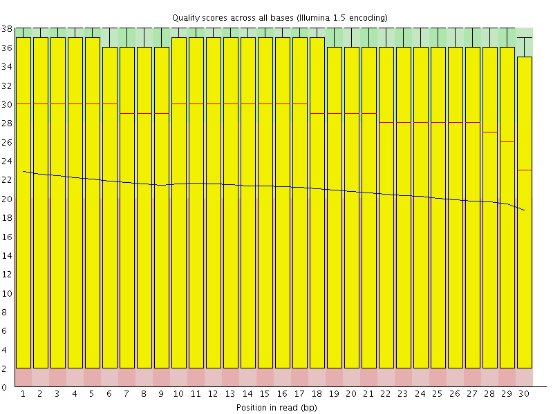
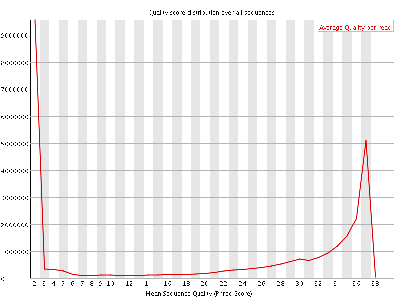
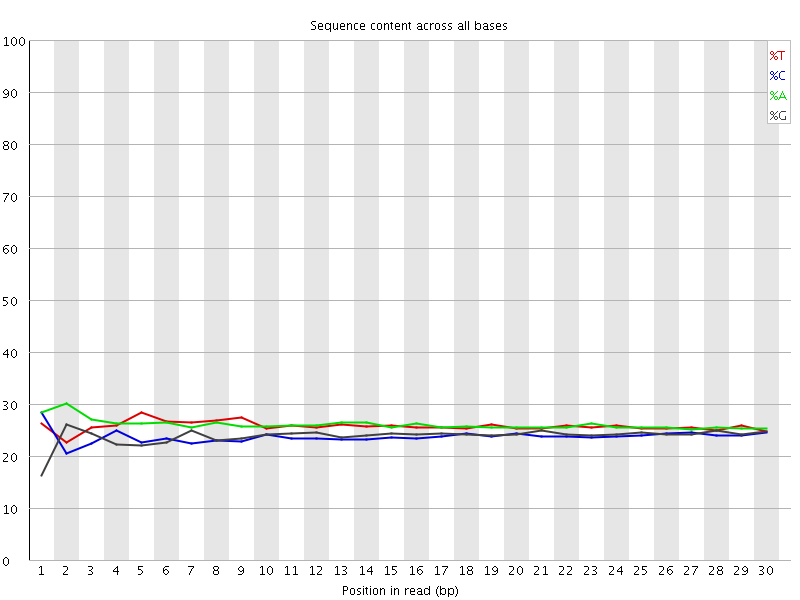
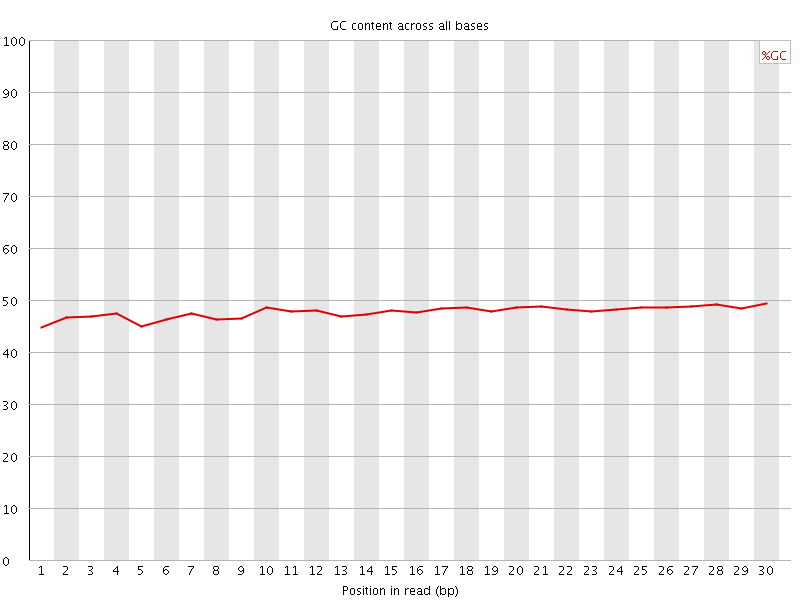
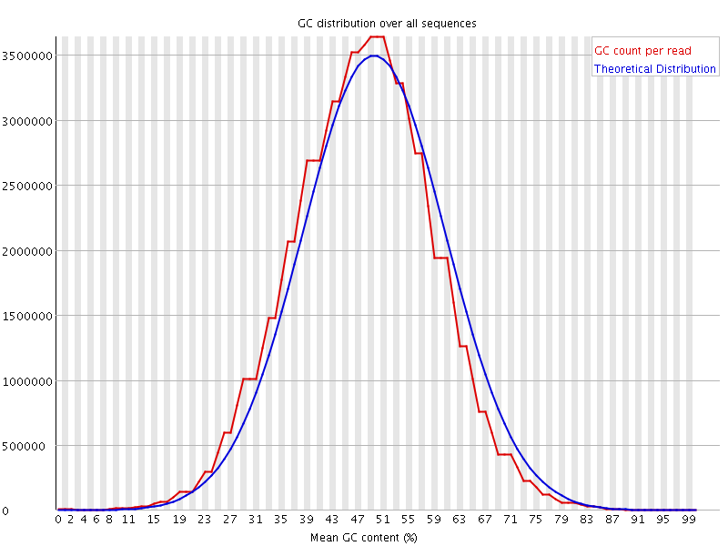
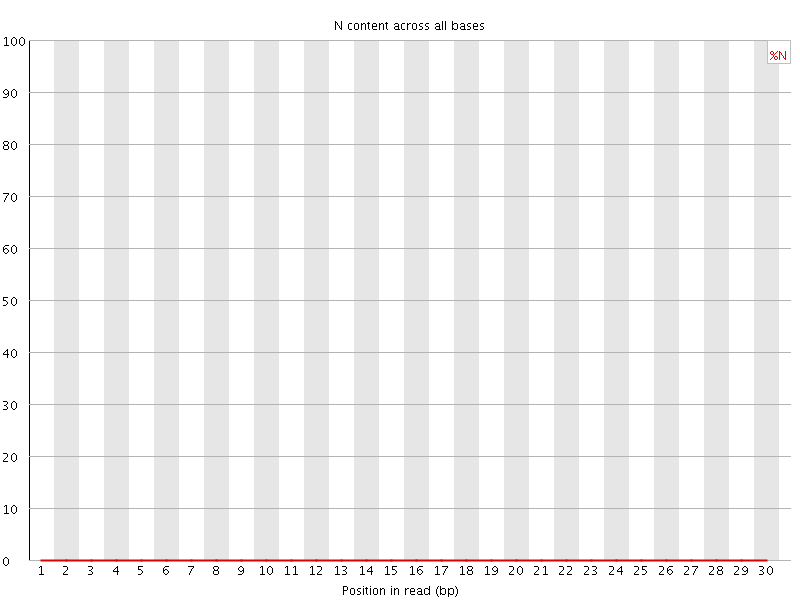
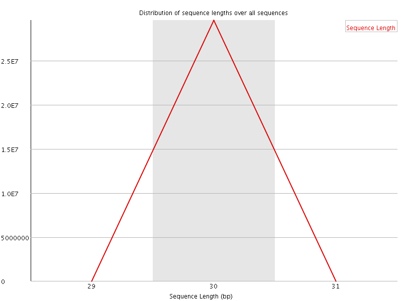
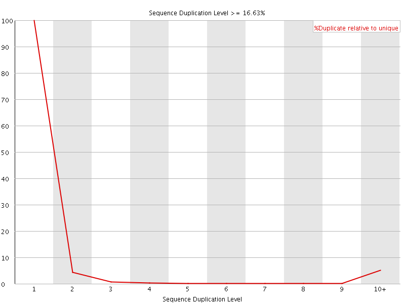
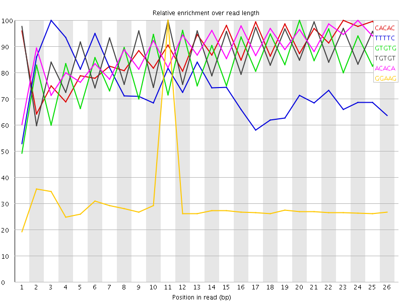

![[OK]](Icons/tick.png) Basic Statistics
Basic Statistics
| Measure | Value |
|---|---|
| Filename | ENCFF001KWE.fastq.gz |
| File type | Conventional base calls |
| Encoding | Illumina 1.5 |
| Total Sequences | 29605854 |
| Filtered Sequences | 0 |
| Sequence length | 30 |
| %GC | 47 |
![[FAIL]](Icons/error.png) Per base sequence quality
Per base sequence quality

Per sequence quality scores

Per base sequence content

Per base GC content

Per sequence GC content

Per base N content

Sequence Length Distribution

Sequence Duplication Levels

![[WARN]](Icons/warning.png) Overrepresented sequences
Overrepresented sequences
| Sequence | Count | Percentage | Possible Source |
|---|---|---|---|
| CTACGAGATCGGAAGAGCTCGTATGCCGTC | 82061 | 0.27717829048268633 | Illumina Single End Adapter 2 (100% over 25bp) |
Kmer Content

| Sequence | Count | Obs/Exp Overall | Obs/Exp Max | Max Obs/Exp Position |
|---|---|---|---|---|
| CACAC | 2400475 | 3.3304036 | 3.7907176 | 23 |
| TTTTC | 2666870 | 3.2159045 | 4.3571167 | 3 |
| GTGTG | 2269430 | 3.190214 | 3.85971 | 20 |
| TGTGT | 2389720 | 3.106365 | 3.587054 | 11 |
| ACACA | 2444125 | 3.0902255 | 3.5092158 | 24 |
| GGAAG | 1510695 | 2.0758505 | 6.8604226 | 11 |
| AAGAG | 1357785 | 1.7057326 | 5.6831684 | 13 |
| GAAGA | 1338335 | 1.6812978 | 5.808134 | 12 |
| AGAGC | 1178555 | 1.6246604 | 6.010653 | 14 |
| AGCTC | 1058575 | 1.480709 | 5.845499 | 16 |
| GAGCT | 1057550 | 1.4745364 | 5.922548 | 15 |
| ATGCC | 881720 | 1.2333285 | 5.7136245 | 23 |
| GAGAT | 930295 | 1.1820678 | 5.204455 | 5 |
| AGATC | 783060 | 0.998183 | 5.2434454 | 6 |
| CGAGA | 523695 | 0.7219235 | 5.0905166 | 4 |
| CGGAA | 507155 | 0.6991227 | 5.367767 | 10 |
| TGCCG | 416555 | 0.63732344 | 5.571812 | 24 |
| GCTCG | 361560 | 0.5531818 | 5.5818915 | 17 |
| TCGGA | 341390 | 0.4759983 | 5.115553 | 9 |
| ATCGG | 297955 | 0.4154371 | 5.0881724 | 8 |
| GATCG | 282990 | 0.39457148 | 5.0731544 | 7 |